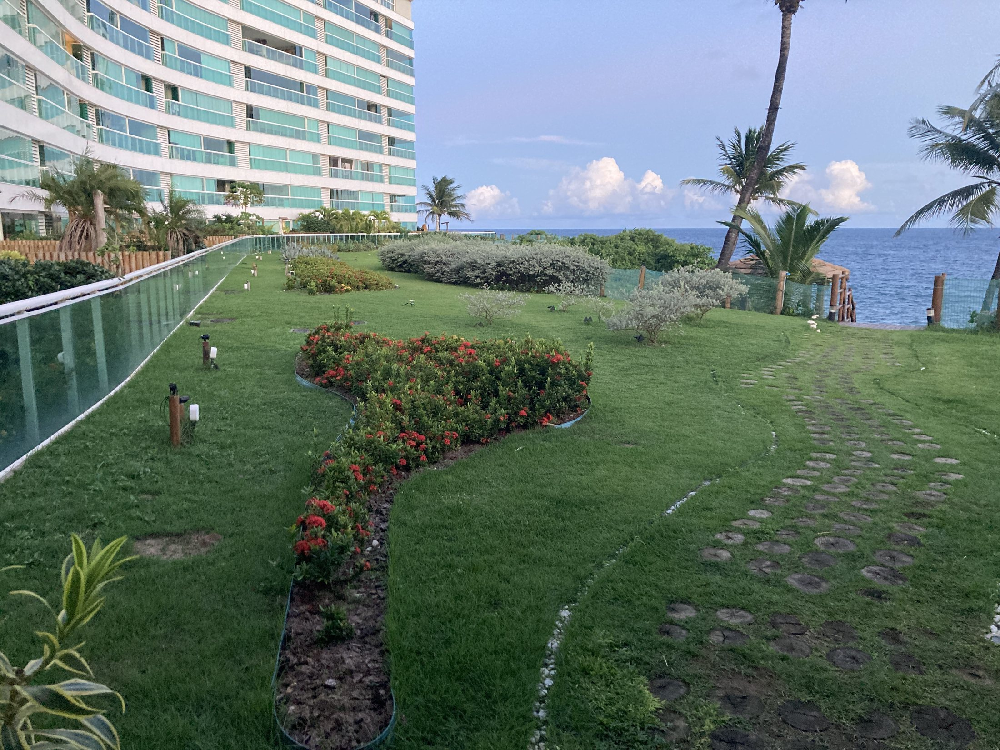

Jardim e paisagismo
Estudo de paisagismo com foco em manutenção realista, iluminação discreta e composição coerente com áreas existentes.

Situação atual do jardim e circulação externa.
Clique aqui para ver a imagem maior

Proposta visual com melhor composição paisagística.
Clique aqui para ver a imagem maior
Jardim e paisagismo: pequenos detalhes, grande impacto visual
O paisagismo do Costa España possui um potencial enorme justamente porque o prédio já tem algo que muitos empreendimentos tentam artificialmente construir: relação direta com o mar, circulação de vento, iluminação natural e uma linguagem arquitetônica que aceita muito bem elementos tropicais.
O problema atual não está necessariamente na ausência de plantas ou jardins. O problema está na composição visual. Hoje, vários elementos parecem desconectados entre si: tonalidades muito próximas, excesso de verde sem contraste, materiais que envelhecem mal e pequenos detalhes de acabamento que passam despercebidos para a maioria das pessoas — mas que influenciam profundamente a percepção estética do ambiente.
Paisagismo sofisticado raramente depende de excesso. Ele depende de contraste, textura, profundidade e iluminação correta.
Um exemplo muito claro disso é a borracha de acabamento em volta das plantas. Hoje, em alguns pontos do condomínio, utiliza-se tonalidade verde. Para quem não possui olhar treinado, isso pode parecer um detalhe irrelevante. Mas visualmente, o resultado tende a ser pobre: o verde da borracha se mistura ao verde das plantas, criando uma composição sem profundidade, sem destaque e com aspecto artificial.
Além disso, com o tempo, esse material verde costuma ressecar, desbotar e adquirir uma aparência plástica pouco elegante.
A proposta de utilizar tonalidades marrons, terrosas ou amadeiradas muda completamente a leitura do espaço. O marrom cria contraste com o verde natural das plantas, aquece visualmente a composição e conversa muito melhor com madeira, pedras decorativas, iluminação quente e elementos tropicais.
Esse tipo de contraste é extremamente importante porque ele ajuda o jardim a “aparecer” visualmente sem precisar exagerar em quantidade de plantas ou decoração.
Iluminação e composição visual
Outro ponto fundamental é a iluminação.
Existe uma diferença enorme entre iluminar um jardim e valorizar um jardim.
Quando a iluminação é excessiva, branca ou mal posicionada, o resultado tende a ficar artificial, cenográfico ou até com aparência comercial. Já uma iluminação quente, baixa e indireta consegue destacar volumes, sombras, texturas e criar sensação de acolhimento.
Em muitos casos, uma simples luz bem posicionada vale mais do que dezenas de elementos decorativos.
As imagens de estudo mostram exatamente isso: pequenos ajustes de materialidade, pedras decorativas, iluminação e composição conseguem transformar áreas comuns sem depender de grandes obras.
As pedras em tonalidades terrosas também ajudam muito nessa construção visual. Diferente das pedras brancas, que frequentemente aparentam sujeira ou excesso de claridade, os tons marrons e avermelhados trazem equilíbrio, sofisticação e uma leitura mais orgânica do espaço.
O mais interessante é que esses elementos podem criar uma identidade visual própria para o Costa España. Quando repetidos com critério — na entrada, nos jardins, em corredores externos e em áreas de transição — eles ajudam o prédio a desenvolver uma linguagem estética coerente e reconhecível.
O objetivo não é transformar o condomínio em um resort artificial ou excessivamente decorado.
O objetivo é criar ambientes mais agradáveis, mais elegantes e mais vivos, utilizando inteligência visual, coerência de materiais e sensibilidade estética.